Workshop Manual ➭ ENGINE ➭ MECHANICAL[L8, LF] ➭ TIMING CHAIN REMOVAL/INSTALLATION [L8, LF]
TIMING CHAIN REMOVAL/INSTALLATION [L8, LF]
id0110a9801000
Warning• Fuel vapor is hazardous. It can very easily ignite, causing serious injury and damage. Always keep sparks and flames away from fuel.
• Fuel line spills and leakage are dangerous. Fuel can ignite and cause serious injures or death and damage. Fuel can also irritate skin and eyes. To prevent this, always complete the “Fuel Line Safety Procedure”. (See BEFORE SERVICE PRECAUTION [L8, LF].)
1. Remove the battery and battery tray. (See BATTERY REMOVAL/INSTALLATION [L8, LF].)
2. Remove the air cleaner. (See INTAKE-AIR SYSTEM REMOVAL/INSTALLATION [L8, LF].)
3. Disconnect the ventilation hose. (See QUICK RELEASE CONNECTOR (EMISSION SYSTEM) REMOVAL/INSTALLATION [L8, LF].)
4. Loosen the water pump pulley bolt and removal the drive belt. (See DRIVE BELT REPLACEMENT [L8, LF].)
5. Remove the front suspension tower bar (joint). (See FRONT SUSPENSION TOWER BAR REMOVAL/INSTALLATION.)
6. Remove the CMP sensor. (See CAMSHAFT POSITION (CMP) SENSOR REMOVAL/INSTALLATION [L8, LF].)
7. Disconnect the OCV connector. (With variable valve timing mechanism.)
8. Remove the ignition coils. (See IGNITION COIL REMOVAL/INSTALLATION [L8, LF].)
9. Remove the drive belt. (See DRIVE BELT REPLACEMENT [L8, LF].)
10. Remove the under cover. (See TRANSVERSE MEMBER REMOVAL/INSTALLATION.)
11. Remove the CKP sensor. (See CRANKSHAFT POSITION (CKP) SENSOR REMOVAL/INSTALLATION [L8, LF].)
12. Remove the P/S oil pump with the oil hose still connected and position the P/S oil pump so that it is out of the way. (See POWER STEERING OIL PUMP REMOVAL/INSTALLATION.)
13. Move the cooler pipe No.3 and heater pipe slightly out of the way.
|
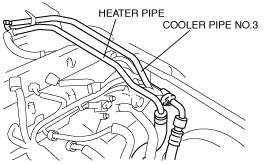 amxzzw00002294 |
14. Remove in the order indicated in the table.
15. Install in the reverse order of removal.
16. Start the engine and:
• Verify the ignition timing, idle speed and idle mixture. (See ENGINE TUNE-UP [L8, LF].)
17. Perform a road test.
|
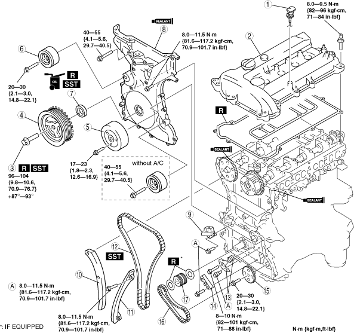 amxzzw00002080 |
|
1 |
Dipstick |
|---|---|
|
2 |
Cylinder head cover (See Cylinder Head Cover Installation Note.) |
|
3 |
Crankshaft pulley lock bolt (See Crankshaft Pulley Lock Bolt Removal Note.) (See Crankshaft Pulley Lock Bolt Installation Note.) |
|
4 |
Crankshaft pulley |
|
5 |
Water pump pulley |
|
6 |
Drive belt idler pulley |
|
7 |
Front oil seal (See Front Oil Seal Removal Note.) (See Front Oil Seal Installation Note.) |
|
8 |
Engine front cover (See Engine Front Cover Installation Note.) |
|
9 |
Chain tensioner (See Chain Tensioner Removal Note.) |
|
10 |
Tensioner arm |
|
11 |
Chain guide |
|
12 |
Timing chain (See Timing Chain Installation Note.) |
|
13 |
Oil pump chain tensioner |
|
14 |
Oil pump chain guide |
|
15 |
Oil pump sprocket (See Oil Pump Sprocket Removal Note.) (See Oil Pump Sprocket Installation Note.) |
|
16 |
Oil pump chain |
|
17 |
Crankshaft sprocket |
Crankshaft Pulley Lock Bolt Removal Note
1. Remove the cylinder block lower blind plug.
2. Install the SST.
|
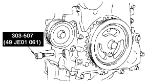 amxzzw00002081 |
3. Turn the crankshaft clockwise until the crankshaft is in the No.1 cylinder TDC position (until the balance weight contacts the SST).
4. Hold the crankshaft pulley by using the SSTs.
|
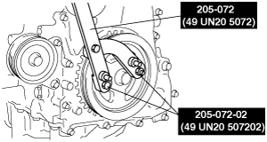 amxzzw00002082 |
5. Remove the crankshaft pulley lock bolt.
1. Remove the oil seal using a screwdriver as shown.
|
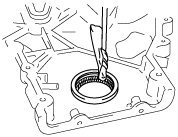 amxzzw00002083 |
1. Using a thin screwdriver, hold the chain tensioner ratchet lock mechanism away from the ratchet stem.
2. Slowly compress the tensioner piston.
3. Hold the tensioner piston using a 1.5 mm {0.059 in} wire or paper clip.
|
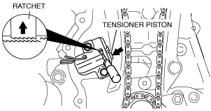 amxzzw00002603 |
Oil Pump Sprocket Removal Note
1. Temporarily install the crankshaft pulley and crankshaft pulley lock bolt to the crankshaft, and lock the oil pump against rotation as shown in figure.
|
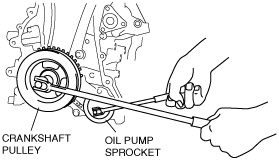 amxuuw00000712 |
2. Remove the oil pump sprocket, and then remove the crankshaft pulley and crankshaft pulley lock bolt.
Oil Pump Sprocket Installation Note
1. Temporarily install the crankshaft pulley and crankshaft pulley lock bolt to the crankshaft, and lock the oil pump against rotation as shown in figure.
|
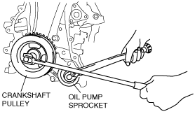 amxzzw00002604 |
2. Install the oil pump sprocket, and then remove the crankshaft pulley and crankshaft pulley lock bolt.
Tightening torque
20—30 N·m {2.1—3.0 kgf·m, 14.8—22.1 ft·lbf}
Timing Chain Installation Note
1. Install the SST to the camshaft as shown.
Europe
|
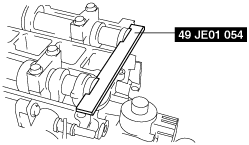 am3zzw00006867 |
Except Europe
|
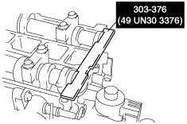 amxzzw00002605 |
2. Install the timing chain.
3. Remove the retaining wire or paper clip from the chain tensioner to apply tension to the timing chain.
Engine Front Cover Installation Note
Note• Install the front oil seal before performing the following procedure.
1. Apply silicone sealant to the engine front cover as shown.
Caution• Install the engine front cover before the applied silicone sealant starts to harden.
• Completely remove any oil, dirt, sealant, or other foreign matter adhering to the engine front cover and engine front cover installation surface. If any oil, dirt, sealant, or other foreign matter is not removed from the space between the engine front cover and engine front cover installation surface, it may cause a sealing malfunction.
Without crescent grooves at joint sections of cylinder head and cylinder block
|
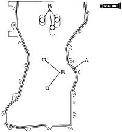 amxzzw00002104 |
Thickness
A: 2.2—3.2 mm {0.087—0.12 in}
B: 1.5—2.5 mm {0.06—0.098 in}
With crescent grooves at joint sections of cylinder head and cylinder block
|
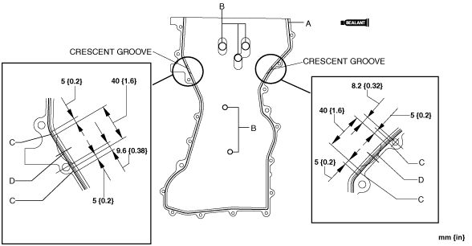 amxzzw00002088 |
Thickness
A: 2.2—3.2 mm {0.087—0.12 in}
B: 1.5—2.5 mm {0.06—0.098 in}
C: 2.2—4.3 mm {0.087—0.16 in}
D: 3.3—4.3 mm {0.13—0.16 in}
2. Install the engine front cover bolts in the order as shown.
|
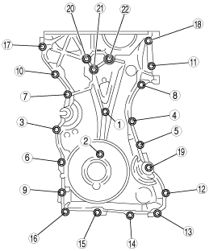 amxzzw00002089 |
|
Bolt No. |
Tightening torque |
|---|---|
|
1—18 |
8.0—11.5 N·m {81.6—117.2 kgf·cm, 70.9—101.7 in·lbf} |
|
19—22 |
40—55 N·m {4.1—5.6 kgf·m, 29.7—40.5 ft·lbf} |
Front Oil Seal Installation Note
1. Apply clean engine oil to a new oil seal.
2. Push the front oil seal in the engine front cover by hand.
3. Compress the oil seal using the SST and a hammer.
|
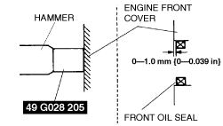 amxzzw00002606 |
Front oil seal press-in amount
0—1.0 mm {0—0.039 in}
Crankshaft Pulley Lock Bolt Installation Note
1. Install the SST to the camshaft as shown.
Europe
|
am3zzw00006867 |
Except Europe
|
amxzzw00002605 |
2. Verify that cylinder No.1 is at TDC of the compression stroke. (Crankshaft balance weight contacts SST.)
3. To position the crankshaft pulley, temporarily tighten it and, using a suitable bolt (M6 X 1.0 length 25 mm—35 mm {0.99 in—1.37 in}), fix the crankshaft pulley to the engine front cover.
|
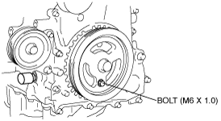 am6zzw00000829 |
4. Install the SSTs to the crankshaft pulley, lock the crankshaft against rotation.
|
amxzzw00002082 |
5. Tighten the crankshaft pulley lock bolt using the following two steps.
(1) Tighten to 96—104 N·m {9.8—10.6 kgf·m, 70.9—76.7 ft·lbf}
(2) Tighten 87°—93°
6. Remove the M6 x 1.0 bolt.
7. Remove the SST from the camshaft.
8. Remove the SST from the cylinder block lower blind plug.
9. Remove the SST from the crankshaft pulley.
10. Rotate the crankshaft clockwise two turns until the TDC position.
• If not aligned, loosen the crankshaft pulley lock bolt and repeat from Step 1.
11. Install the cylinder block lower blind plug.
|
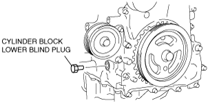 am6zzw00000929 |
Tightening torque
18—22 N·m {1.9—2.2 kgf·m, 13.3—16.2 ft·lbf}
Cylinder Head Cover Installation Note
1. Apply silicone sealant to the mating surfaces as shown.
Caution• Install the cylinder head cover before the applied silicone sealant starts to harden.
|
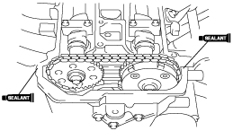 amxzzw00002091 |
Thickness
4.0—6.0 mm {0.16—0.23 in}
2. Install the cylinder head cover with a new gasket.
3. Tighten the bolts in the order shown.
|
|
 amxzzw00002092
amxzzw00002092Tightening torque
8.0—9.5 N·m {82—96 kgf·cm, 71—84 in·lbf}